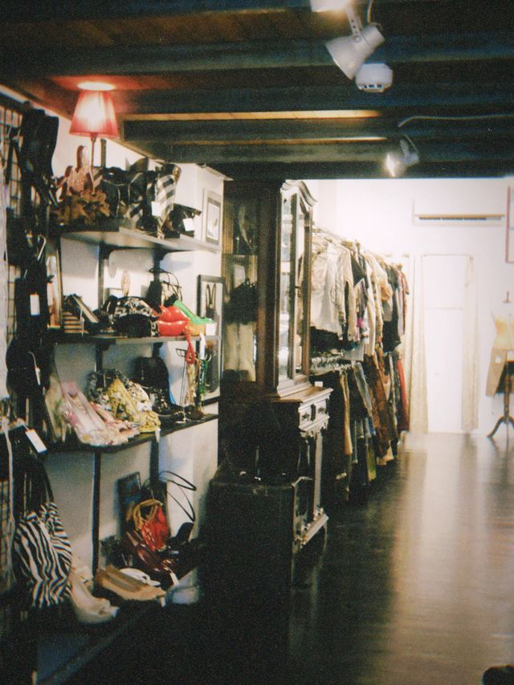

Photo by İpek Kuğu from Pexels: Vintage boutique interior with fashion items displayed
Here are some of my favorite popular spots from these times. So many memories and places that are no longer here
Which one of these old popular places do you remember? Don't you miss going into some of these stores walking throughing the aisles and seeing many items that may no longer exist anymore?
STORY TIME
I miss going into Blockbuster seeing all the different genres we had options to choose from. Especially the excitement when new releases came out. K-mart was one of my favorite stores as a child. I remember their in-store portrait studio where my mom use to bring me to take my baby pictures that I still have in the photo albums. I rememeber going there to shop with my mom and they had any type of items you was looking for, and then we would get something to eat from the sit down area from the cafeteria they had inside of their store. The fresh clean smell of new shows I can smell to this day walking into payless. Excited to buy light up shoes or sandals to go with my school uniform and summer dress. Toys R Us was a Kid's favorite place to be. You can find videogames, board games, bikes, barbie dolls, boy toys, water fun equipment, trampolines. Everything a kid want you will find in there. Every year my mom would receive the Toys r us circular in the mail, me and my siblings would circle and write a list of items we want for christmas. Chuck E Cheese I loved so much. The photobooths and you can get your photo printed after. Seeing the characters come out to entertain us. I loved eating their pizza and buffalo wings with blue cheese. Then at the end of the night all the kids seeing who have the most tickets to show off. Feeling disappointed if you didnt have enough tickets to get the big prizes that you really wanted.
What do you want to see next? Outdoor Fun OR Love & Romance
CHECK OUT THIS FUN QUIZ FROM BUZZFEED. We’ll Know If You’re A Real Millennial Based On Which Of These ’90s Things You Pick!